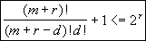

CMSC 417
Midterm #2 (Spring 1997) - Solutions
1.)
(15 points) Define and explain the following terms:
a)
forbidden region: illegal
combinations of time/sequence numbers that could permit data from old
connections to be accepted as part of a current connection. Caused by node
crashes or sequence number wrap around.
b)
flow control: matching
rates between producers and consumers.
Can be done at the link or network layers.
c)
two army problem: explains
the problem of communicating over an unreliable network. The problem is that two parties can never
know if the last message sent was correctly received. This problem relates to deleting a connection between two hosts.
d)
MTU: Maximum Transfer
Unit. The largest packet/frame size that can travel over a network or link.
e)
bit stuffing: a way to
prevent the occurrence of a frame boundary string from occurring in data. After a specific sub-string of the pattern
is seen, a bit is inserted to prevent the target string from appearing.
2.)
(15 points) Error
correction and detection.
a)
What is the minimum number of error recovery bits required to
recover from an n bit error? Explain
why this number of bits is sufficient.
let n = m + r, m is the message length, r is the number of
error recovery bits. To be able to recover from a d bit error we need to have n
choose d invalid messages for every valid message. n choose d is the number of ways you can flip exactly d bits in
an n bit message. There are 2m valid messages so: [(n choose d) + 1] 2m <=2 but n = m + r so [(m + r) choose d + 1] <= 2r

so that the bit pattern with n errors is the closest (min.
hamming distance) bit pattern to the correct message (it’s n bits away and the
rest will be at least n+1).
b)
If the ratio of error detection bits to payload bits remains
constant, what are the tradeoffs between having the error bits applied to a
single character vs. a block of characters?
Bigger blocks can detect longer burst errors
Smaller blocks reduce latency when sending small frames and reduce the
amount of data to be re-transmitted when an error occurs.
3.)
(20 points) One way to support mobile hosts is by assigning a
host a temporary IP address in its new location, and continuing to use its old address by tunneling IP through IP
back to an agent running on the mobile host’s home network.
a)
Explain the steps required to permit a mobile host to register
on a local network and start receiving packets using its permanent IP address.
1)
connect to local server (agent) on the foreign network and
request temp IP address.
2)
local agent contacts home agent to inform it of the mobile
host’s temporary IP address.
3)
home agent starts tunneling packets destined from the mobile
host on its temporary.
Other answers that provide the same information exchange are
possible.
b)
Give one advantage and one disadvantage of this approach to IP
mobility compared with having a mobile host only use its permanent IP address.
+
only need the remote agent to setup the transfer, not forward each packet
+packets
can be sent directly to the mobile host at its temporary IP address to prevent sending packets long distances
twice.
-
software could cache temporary IP address and re-use it after the mobile moves
again.
-
uses two IP addresses
c)
When tunneling IP through IP, it is not possible to always
maintain a one for one match between tunneled packets and the native packet.
Why? Explain the potential performance
implications of this limitation.
Tunneled packet needs an IP header and if the packet to
tunnel is already at the MTU for the network, the extra size will require it to
be fragmented. Fragmentation will slow
down the network due to extra overhead of processing two packets and the need
to re-transmit all parts of a fragment if one is lost.
4.)
(15 Points) IP
Addresses
a)
The Internet is running out of IP addresses to assign, but
there are substantially less than four billion hosts on the Internet. Explain why this is happening.
Internal fragment due to IP addresses being assigned in
blocks rather than one at a time.
b)
Joe Hacker reads about IPv6
(with 128 bit address) and is concerned about routing table size. He decides that the best solution is to
encode latitude and longitude into IP addresses. Explain how this might be used
to reduce routing table size. Provide a
reason why this might not reduce routing table size.
Geographic information could be used as the basis of hierarchical
routing. Nodes would store detailed
routing information for its local region and only sparse information for
distant nodes. The problem is that due
to administrative domains and different ISP’s physical location is not equivalent
to nearest neighbor for routing purposes.
5.)
(15 Points) Consider a
network where on average, messages between two hosts must travel through 10
routers (and thus 11 hops). On average,
one packet in every 1,000 is lost as is passes through a router.
a)
If one packet in 100 is garbled per hop, what is the
probability of a packet making it through the network if no link level
re-transmission is used? What if
link-level re-transmission is used?
With re-transmission,
link garbling does not occur so p = .99910
Without re-transmission, link garbling and router drops can
happen so p = .99910 x .9911
b)
Repeat part a if the probability of a link garbling a packet
is 1 in a billion.
With re-transmission, link garbling does not occur so p =
.99910
Without re-transmission, p = .99910 x (1-10-9)11,
conclusion don’t need link retransmission when link error probability is very
low.
6.)
(15 points) Congestion
Control
a)
Why is congestion control more important in a network carrying
traffic whose bandwidth requirements vary dynamically during a session compared
with fixed bandwidth traffic?
With static traffic, congestion avoidance via call admission
can be used. With dynamic traffic, call
admission leads to under utilization of the network due to conservative
allocation choices.
b)
In TCP (Jacobson) congestion control, the variance in
round-trip times for packets implicitly influences the congestion window. Explain how a high variation in the
round-trip time affects the congestion window.
What is the impact of this high variation on the throughput for a single
connection?
With all other things being the same (i.e. losses and
congestion), high variance in RTT will lead to a long timeouts for
re-tranmission. This will make
congestion detection slower since we only close the window when a packet is
dropped (detected via a timeout). As a
result, it is more likely the network will get into a congested state, this
will reduce the throughput of our connection.